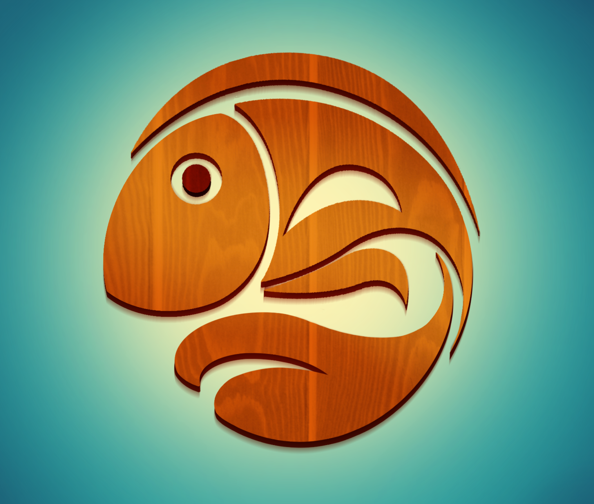

Welcome to FishMetrics. First things first: this isn't a scientific measure of any fisherperson's skills, so shouldn't be taken too seriously. If you like playing with numbers like I do, keeping tabs on your CotD fishing career, or casually comparing stats with friends and clanmates, FishMetrics is for you. Enjoy!
How to Use FishMetrics
1) Go to Log Records to enter fish weights.
2) Dashboard shows your overall progress and KPIs.
3) Use the sliders on Dashboard to filter and explore your stats.
4) Explore performance by map and by fish using Score Ranges and Fish Insights.
5) Career Targets and Focus Mode help prioritize fish sets to improve stats.
6) Use the share icon (top right) to download and share scorecards.
Preferences
Data & Backups
Want to move FishMetrics to another device (or just keep a safety copy)?
Season Archiving
Seasons archive automatically when the calendar month changes.
Your previous season information is preserved for reference.
Acknowledgements
A huge thank you to everyone — my super awesome clanmates at  Carp Diem who inspired this project and helped with many hours of brainstorming and testing, friends from all across the CotD community for ideas and feedback, and particularly those non-gamer friends who had no clue what CotD was but never said no to a debugging SOS — for your time! This project wouldn’t be possible without you 💜
| Rarity | Fish | Your Record (lbs) | Points | Stars |
|---|